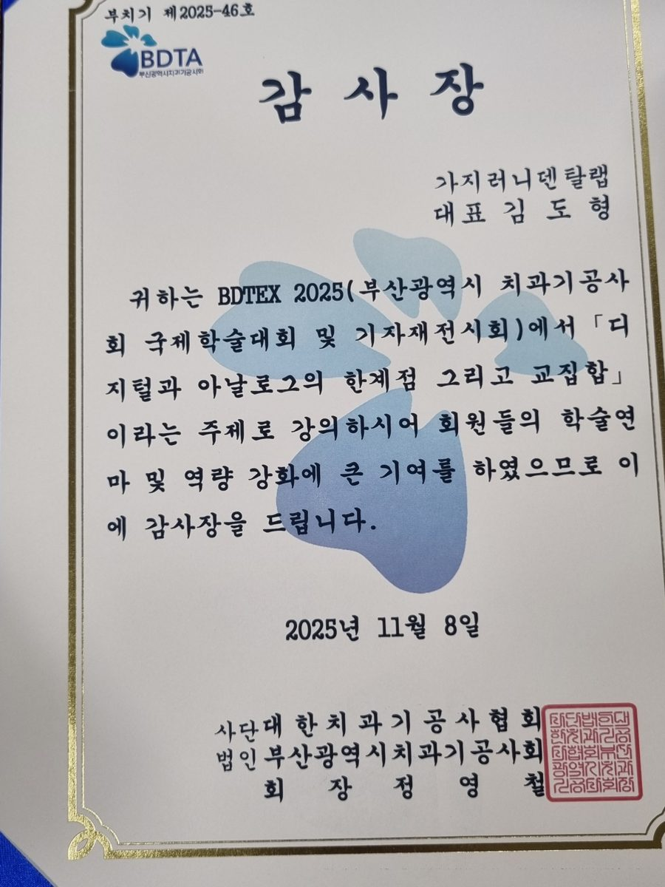
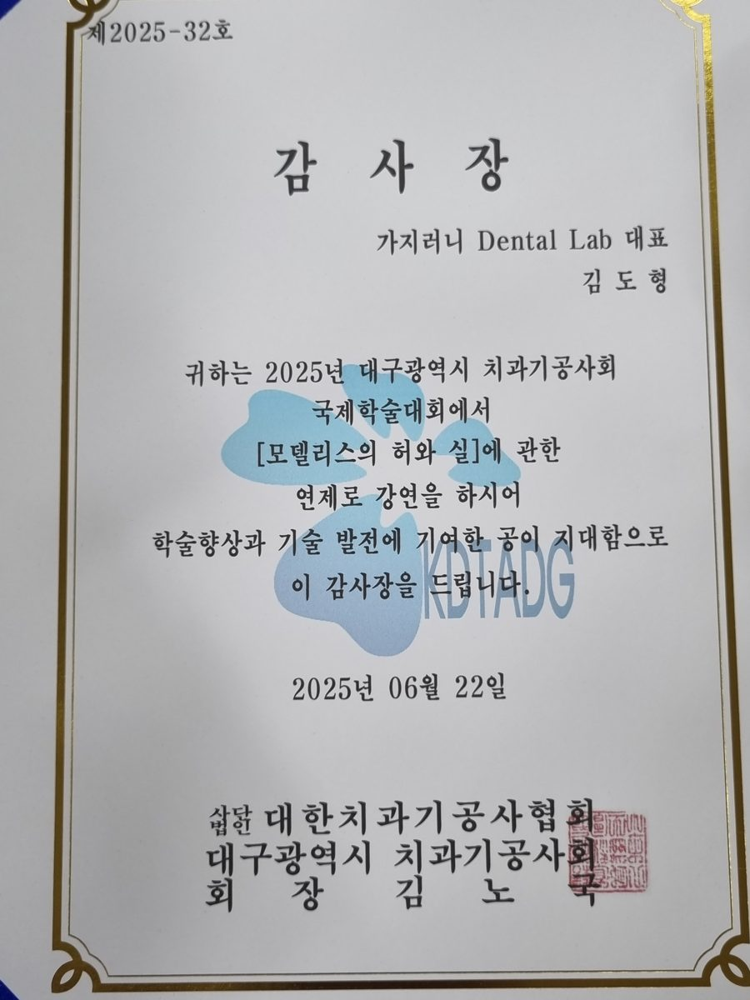
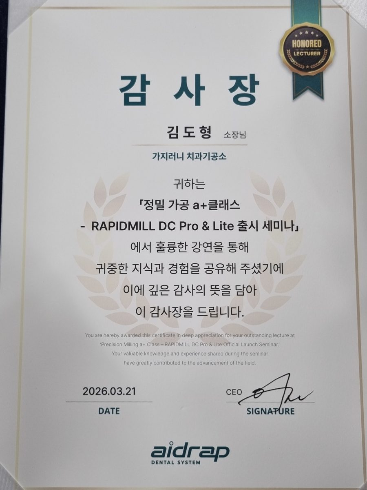
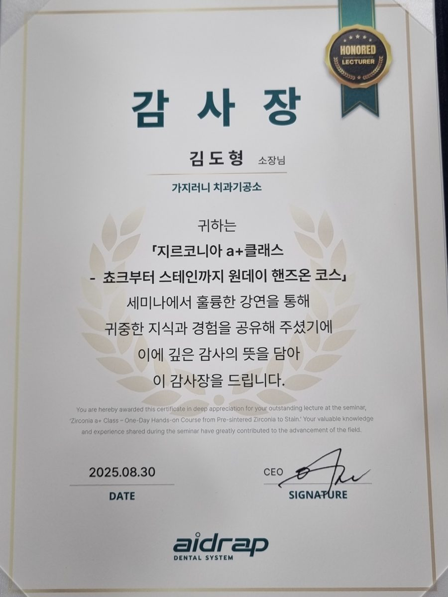
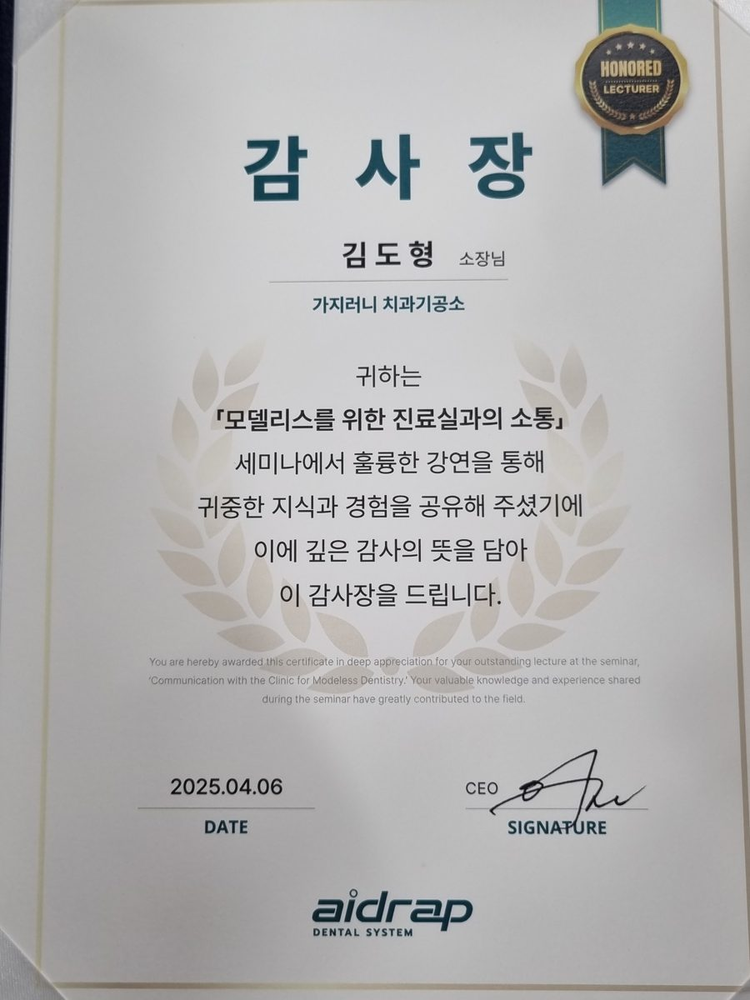

부산 치과기공소 · 남구 대연동 · 2016년 개소 · 모델리스 CAD/CAM · 전치부 심미보철
가지러니 덴탈랩 대표 김도형은 치과기공사입니다. 진주보건대학교 치기공과를 졸업하고 2016년 부산 남구 대연동에 기공소를 열었습니다. 모델리스를 주제로 학술대회와 기업 세미나에서 강의해 왔습니다.
| 정기 | GC Korea 국비지원 세미나 강사 — 2021년부터 매년 상·하반기 연 2회 진행 |
|---|---|
| 정기 | DOF(도프)·aidrap(에이드랩) 장비 세미나 강사 |
| 직위 | GC Initial Ceramic KOL (Key Opinion Leader) |
| 직위 | DOF Digital Dental Technician 기술 자문 |
| 직위 | Vatech Perfit Zirconia 강사 |
| 이수 | GC · Noritake 세미나 트레이닝 코스 |
| 학력 | 진주보건대학교 치기공과 졸업 |
| 2026.11 | 대한치과기공사협회 부산회 강의 (예정) |
|---|---|
| 2026.10 | 대한치과기공사협회 충남회 강의 (예정) |
| 2026.03.19 | 팍스경제TV 「클로즈업 기업현장」 방송 출연 — 방송 페이지 · 영상 보기 |
| 2026.03 | BDEX 2026 벡스코 B38 부스 참가 |
| 2026.03.21 | aidrap 「정밀 가공 a+클래스」 — RAPIDMILL DC Pro & Lite 출시 세미나 강의 (오스템임플란트 EAST동 세미나룸, 정원 30명). 라미네이트 가공 노하우와 RAPIDMILL DC Pro 실사용 경험. Luxe 치과기공소 유두호 소장과 공동 연자 |
| 2026.02 | GC Korea 부산 국비세미나 강의 — 스펙트럼·러스터·검 스테인, One SQIN |
| 2025.11.08 | BDTEX 2025 부산 국제학술대회 강연 — 「디지털과 아날로그의 접점 그리고 교정」 (부산광역시치과기공사회 감사장 제2025-46호) |
| 2025.08.30 | aidrap 「지르코니아 a+클래스」 강의 — 「초크부터 스테인까지 원데이 핸즈온 코스」 (GC Korea 부산 세미나실, 정원 12명). UPCERA TT-One Pre-Shaded 블록을 활용한 후가공 중심 핸즈온 |
| 2025.06.22 | 대구 국제학술대회 강연 — 「모델리스의 허와 실」 (대구광역시치과기공사회 감사장 제2025-32호) |
| 2025.04 | aidrap X 오스비스 합동 세미나 강의 — 「모델리스를 위한 진료실과의 소통」 (에이드랩 공식 소식) |
| 2024.11.14 | DOF 부산 세미나 강의 (디오에프연구소 부산 첫 개최) — DOF 공식 게시판 후기 |
| 2024.08.25 | GC Korea 기획 세미나 강의 — 「치과위생사에게 들려주는 모델리스 보철 진료에 대한 이야기」 (GC Korea 부산 세미나실, 치과위생사 대상 4시간). 쉐이드 테이킹, 인상체 확인법, 정확한 바이트 채득, 임시치아와 최종 보철 정확도 |
| 2024.08 | 한국세라믹기술원·GC Korea 국비지원 세미나 강사 — Initial Ceramic 부산 Zirconia Staining 과정 (GC Stain & Glaze System, Initial IQ Lustre Pastes ONE) |
| 2024.03.09 | DOF digital Academy 세미나 강의 — 「CRAFT 5X를 활용한 실패 없는 모델리스」 (치과기공 전문지 Zero 보도) |
| 2021.08 | 한국세라믹기술원(KICET)·GC Korea 국비지원 세미나 강사 — 부산 지역 PFM Build up 과정 (부산 미주덴탈 세미나실) |
아래는 강연에 대해 각 단체·기업이 수여한 감사장입니다. 강연 이력의 실물 증빙입니다.




